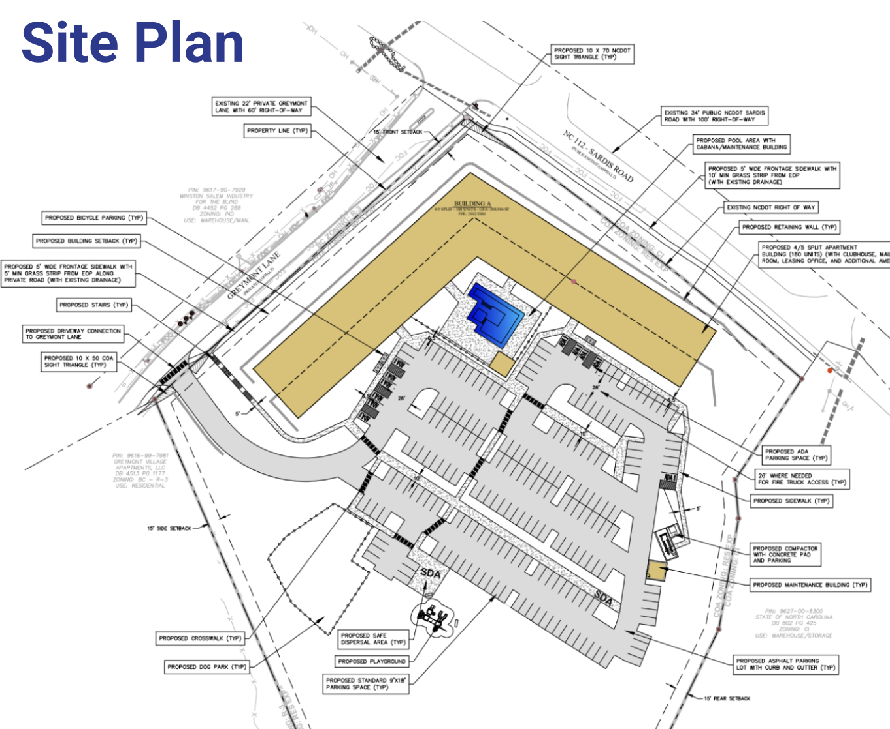
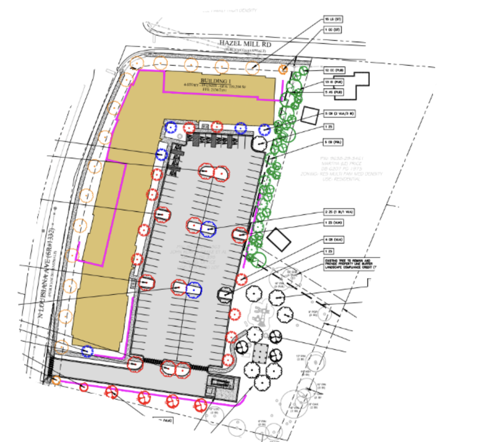

Asheville City Council - March 10th Meeting
March 18, 2026
Here’s what we found to be the most important housing-related items at Asheville’s City Council meeting of Tuesday, March 10, 2026.
Conditional Zonings on Sardis Road and North Louisiana Avenue
230 Sardis Road
Asheville For All Position: In Support 👍
Outcome: Approved
Votes:
Unanimous in favor
383 North Louisiana Avenue
Asheville For All Position: In Support 👍
Outcome: Approved
Votes:
Unanimous in favor
The bulk of this short meeting was taken up by two conditional zonings. (In case you need a refresher, one of our recaps from last year goes into some detail as to what a conditional zoning is.)
The first hearing was for the construction of a building at 230 Sardis Road, at the site of an old plastics factory.

There is a fair amount of industrial zoning in the area, but this appears to be changing. An adjacent lot, for example, was approved for apartments just a few years ago. Furthermore, this location is less than a 15-minute walk to two different schools.
The City Council approved this building unanimously and without much fuss.
Interestingly, during this hearing a couple of councilors discussed the importance of new infill housing in boosting property tax revenue. This was a topic in a recent Asheville Watchdog article. And Urban3, a nationally-recognized local planning consulting group, has made this kind of case repeatedly, most recently in a video endorsing “missing middle” style infill housing.
The second conditional zoning hearing was for a building on Louisiana Avenue, just north of Patton Avenue.

This one looks similar to the first, but has one key difference: the development is using the federal Low-Income Housing Tax Credit (LIHTC) to subsidize rental costs, so that all of the homes in the building will be rented at below-market rates. In a sense, the construction of homes such as this does double-duty: they contribute to overall housing supply, and they also increase the availability of housing for working people and families that struggle the most with housing costs. And in doing so, they effectively bring federal dollars to Asheville. As much as we support using local property tax and bond revenue to subsidize housing costs, being able to see federal dollars put to use in Asheville is even better.
Just as with the Sardis Road apartments, Council unanimously approved this one.
An Amendment to Asheville’s Community Development Consolidated Plan
Asheville For All Position: In Support 👍
Outcome: Approved
Votes:
Unanimous in favor
There was one more housing-related item on the agenda, and it was simply to amend the city’s stated goals with respect to the use of certain federal funds. There was no specific tangible outcome tied to this vote, it was more about defining the principles that would determine spending down the line, over the next five years. The amendment added multifamily housing construction as a possible “priority need and goal,” whereas the plan for these federal funds previously did not list multifamily housing construction as a possibility at all.
Asheville For All did send in a letter of support for this measure, though we didn’t expect that there would be any opposition. Again, Asheville City Council voted unanimously in favor.
* * *
We appreciate that Asheville City Council approved nearly three hundred homes, though in an ideal world we would have more homes being built without having to go through the conditional zoning process.
Some of these homes are market rate, and some are subsidized. As a brand new study affirms, we need all of these housing types in order to bring down costs and increase housing stability and housing options for all kinds of people.
Additional Media Coverage
- Blue Ridge Public Radio: “Asheville Council hears update on revenues, fee increases”
- Mountain Xpress: “Council approves rezoning for 269 housing units”
- Citizen Times: “100% affordable housing development headed for Emma in West Asheville”